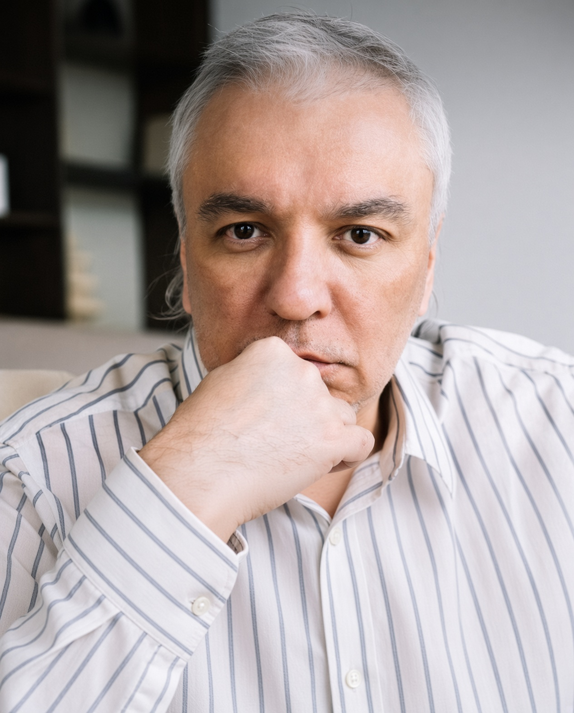

Когда состояние не завершено — мир кажется отдельным и угрожающим.
Когда состояние завершено — мир становится продолжением и опорой.
Тревога, страх, обида, апатия, вина, напряжение, эмоциональные петли — всё это незавершённые состояния. Они крутятся по кругу, потому что им не дали места и не дали завершиться.
Попытки бороться, менять, «прорабатывать» или подавлять. Состояние возвращается снова и снова.
Состоянию даётся место. Оно проживается до конца. Появляется пространство. Следующее состояние приходит уже иначе.
Это не про то, чтобы с чем-то бороться или что-то менять. Это про то, чтобы дать состоянию место и дойти до конца.
Состояние выносится «напротив» — как отдельная форма. Появляется дистанция и ясность границ.
В пространстве между тобой и состоянием появляется то, что не является состоянием. Фон. Непостижимое.
Состояние доходит до своего конца без сопротивления и без усилия. Оно завершается само.
Появляется ясность, опора, спокойствие. Следующее состояние приходит уже из другого места.
Незавершённое ожидание угрозы. Когда тревоге даётся место — она перестаёт управлять вниманием.
Застывшее движение. Завершённый страх возвращает способность действовать.
Незавершённый контакт. Когда обида доходит до конца — появляется свобода.
Замороженное движение. Через пространство возвращается живой интерес.
Состояния, которые держат тело и внимание. Завершение освобождает.
Повторяющиеся сценарии. Когда цикл завершается — петля распадается.

Потом нажми зелёную кнопку Commit changes вверху. Ты Это? Grok Да, это оно. Ты нашёл нужное место. Выдели весь блок отМеня зовут Георгий Кокурин. Я кризисный психолог.
Работаю с незавершёнными состояниями через метод «Место, в котором нет состояния». Раньше занимался каббалой (Бней Барух, Лайтман), сейчас упростил это до простой практики, которая не требует усилия и напряжения.
Есть профессиональная переподготовка по психологии (МГУ) и сертификат по кризисной психологии.
Онлайн-сессии. Москва и удалённо.
Индивидуальная работа
Длительность — по необходимости состояния
Формат — онлайн (Zoom / Telegram)
или на почту egorkokurin@gmail.com
Это работа с незавершёнными эмоциональными состояниями через создание пространства. Можно называть кризисной помощью или практикой присутствия. Важно не название, а результат — состояние доходит до конца.
Нет. Метод не требует усилия и «домашних заданий». Всё происходит в пространстве сессии.
Зависит от состояния. Иногда хватает одной. Иногда несколько. Мы смотрим по факту, а не по плану.
Сейчас основной формат — онлайн. Это удобно и достаточно для метода.